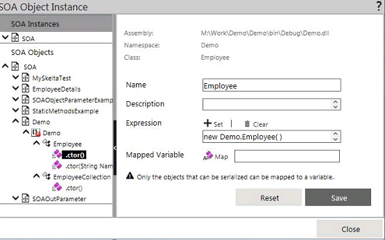
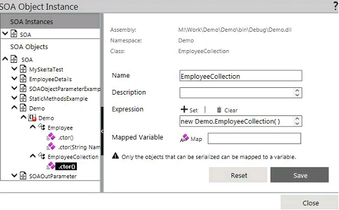
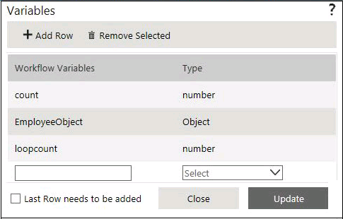
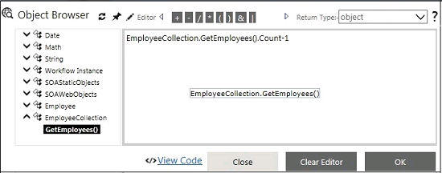
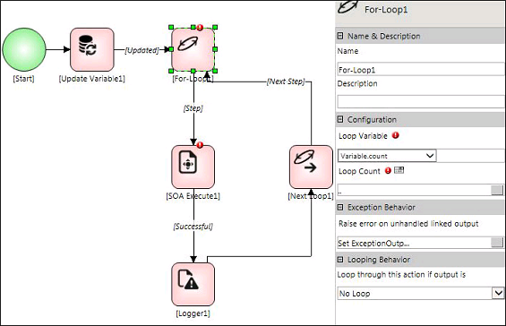
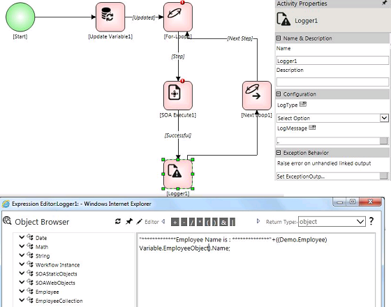
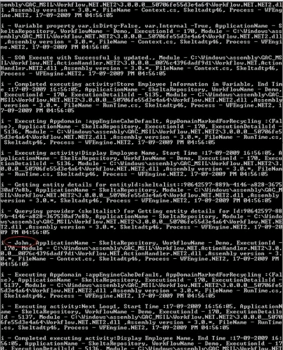

No
This example illustrates how to iterate a collection object. It is possible to persist an object's state in a long running workflow by using variables of type Object. In some scenarios, complex objects may be a collection of other complex objects. Here, one may be required to iterate through the collection to get the desired object.
For example, EmployeeCollection object returned from a WCF Service contains collection of an employee object. To get all the information of an employee, you are required to iterate through the employee collection.
This can be done by collective use of some AVEVA Work Tasks activities as described below. It shows how one can iterate through the collection object in a AVEVA Work Tasks workflow. This enhances the capability of holding the collection object in variables of Object type and iterating through the collection for using the items in the collection object.
Scenario
Employee collection object, which is returned from WCF Service, is to be iterated for displaying employee information.
Steps to design the scenario
Note: You can make use of an existing class to achieve the scenario.
Employee class: Holds the employee information.
EmployeeCollection class: Holds the Employee object collection i.e., collection of employee information.
Note: Only the objects that can be serialized are persisted in long running workflows. Objects that need to be stored in the AVEVA Work Tasks variables should be marked as Serializable.
using System;
using System.Collections.Generic;
using System.Linq;
using System.Text;
namespace Demo
{
[Serializable]
public class Employee
{
string _name = string.Empty;
int _age = 0;
string _employeeId = string.Empty;
public string Name
{
get {return _name ;}
set { _name = value;}
}
public int Age
{
get { return _age; }
set { _age = value; }
}
public string EmployeeId
{
get { return _employeeId; }
set { _employeeId = value; }
}
public Employee()
{
}
public Employee(string Name, int Age, string EmployeeId)
{
this._employeeId = EmployeeId;
this._age = Age;
this._name = Name;
}
public Employee GetEmployee()
{
return this;
}
}
[Serializable]
public class EmployeeCollection
{
List<Employee> employeeList = new List<Employee>();
public EmployeeCollection()
{
this.employeeList.Add(new Employee("Kevin",30,"SK001"));
this.employeeList.Add(new Employee("Albert",30,"SK002"));
this.employeeList.Add(new Employee("Jim",30,"SK003"));
this.employeeList.Add(new Employee("Jo",30,"SK004"));
this.employeeList.Add(new Employee("Roger",30,"SK005"));
this.employeeList.Add(new Employee("John",30,"SK006"));
}
public List<Employee> GetEmployees()
{
return this.employeeList;
}
}
}



Variable description
Sample Code
EmployeeCollection.GetEmployees().Count - 1; //Get the actual count of the items in the collection object. Subtracting one from it will give the actual loop count required.



Sample code
((Demo.Employee)Variable.EmployeeObject).Name;
Variable EmployeeObject holds the employee information. In order to get the property of the object we need to type cast to the proper object type. i.e., the Employee object, Demo.Employee.

Using this, it is possible to persist complex objects in the workflow and iterate through the collection object to get an item from it.